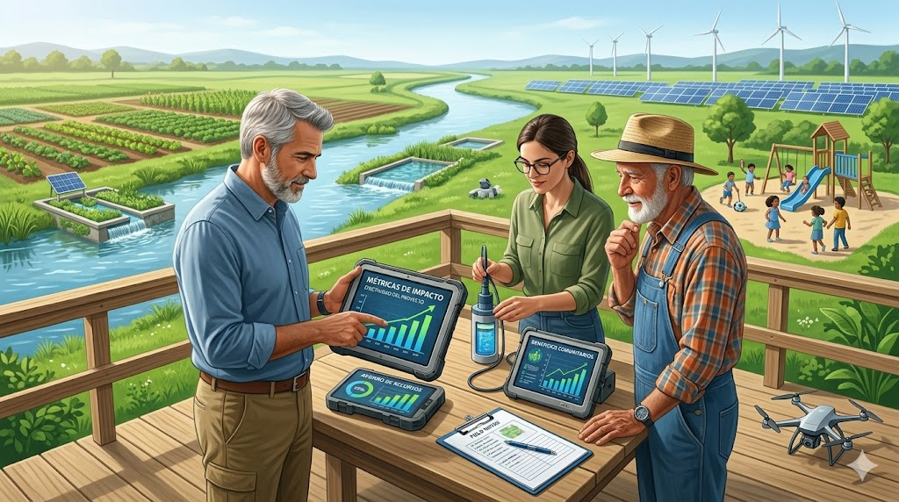

Desarrollo territorial sostenible
El desarrollo territorial requiere articulación, planificación e innovación social para generar impactos sostenibles en el tiempo.
Noticias, artículos y contenido institucional.
El desarrollo territorial requiere articulación, planificación e innovación social para generar impactos sostenibles en el tiempo.
Los procesos participativos fortalecen la legitimidad, la gobernanza y la sostenibilidad de las intervenciones territoriales.

Medir resultados permite tomar mejores decisiones, optimizar recursos y fortalecer la efectividad de los proyectos.
Contáctanos y descubre cómo podemos contribuir al desarrollo sostenible de tu organización o territorio.
Contáctanos